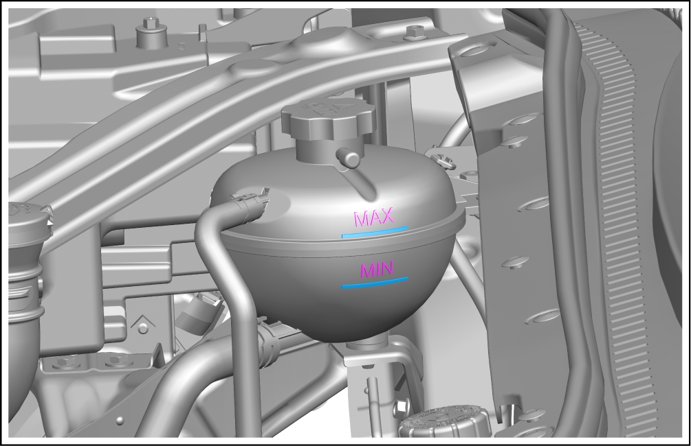

Inspection of Coolant Level

Check the coolant level in the expansion tank assembly when the vehicle is cold.
-
Check the coolant level of motor cooling system.
-
Observe the coolant level in the expansion tank assembly. Confirm that the coolant level is between "MIN" mark and "MAX" mark.
-
If the coolant level in the expansion tank assembly is at or below the "MIN" mark, add coolant to the expansion tank assembly until it reaches the "MAX" mark, and check the cooling system for leakage.
If the coolant level is too low, be sure to select and refill the corresponding type of original coolant according to the current minimum ambient temperature in the vehicle use area.
For a new vehicle, the coolant level may be above the "MAX" mark, which is normal, and there is no need to pump out the coolant.
Reminder-
The coolant level must be checked according to this standard during delivery inspection and routine maintenance.
-
If the coolant is lost too rapidly, it is necessary to find out the cause and eliminate the fault.
 -
-
Obtain a new work order for repair or replacement.